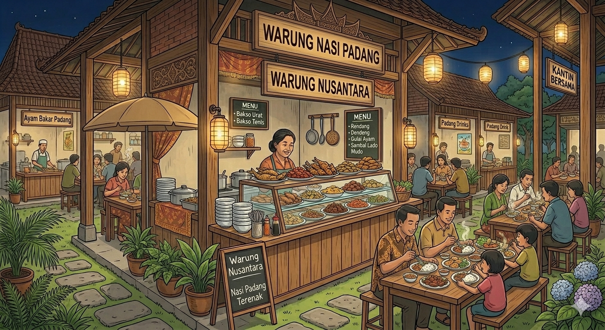
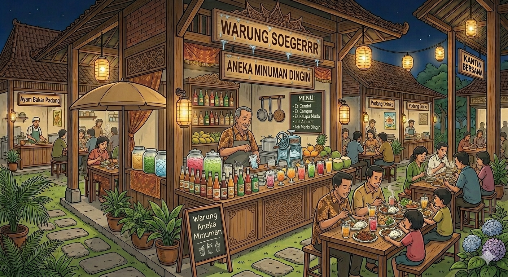

Pilih Warung Favoritmu!
Tersedia berbagai pilihan menu dari tenant terbaik

Warung Nusantara
Aneka nasi goreng, ayam geprek, dan menu khas Indonesia.
- Nasi Goreng - Rp15.000
- Ayam Geprek - Rp13.000
- Nasi Padang - Rp18.000

Warung Ibu Siti
Mie ayam, bakso, dan pangsit dengan cita rasa spesial.
- Mie Ayam - Rp14.000
- Bakso Urat - Rp12.000
- Pangsit Goreng - Rp10.000

Warung Soegerrr
Minuman segar dan camilan favorit sepanjang hari.
- Jus Alpukat - Rp10.000
- Es Teh - Rp5.000
- Gorengan - Rp8.000